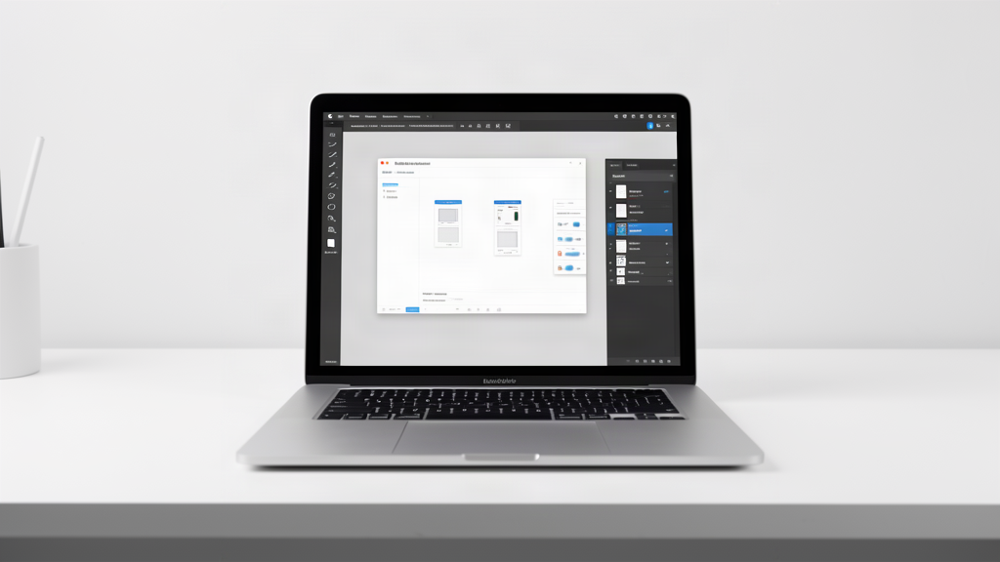
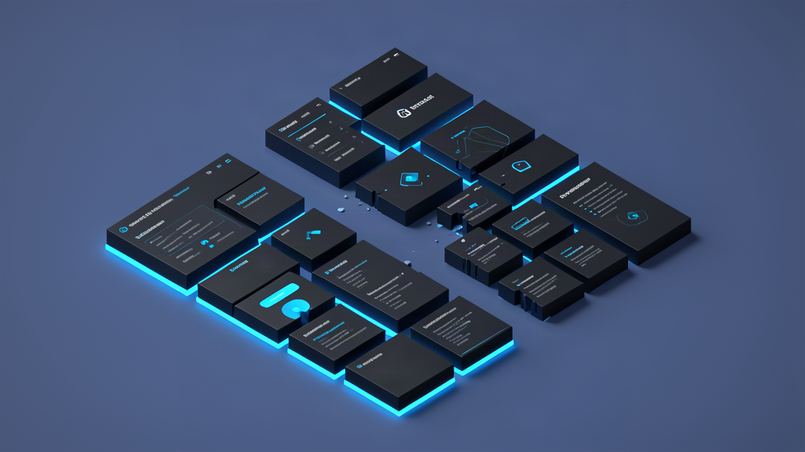
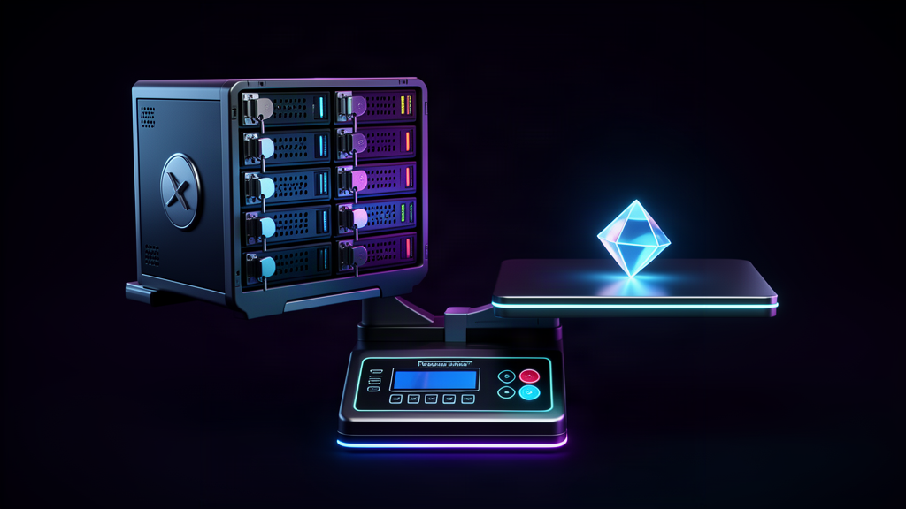

Отдавать каждый месяц по $20–50 за тяжелый пакет от Adobe или Microsoft ради пятиминутной задачи — форменное безумие. Программа весит двадцать гигабайт, ставит в систему фоновые службы и постоянно проверяет лицензию по сети.
На днях волну споров вызвал проект ArtCraft: инженер Брэндон Томас выкатил серию легковесных утилит на Rust, заменяющих комбайны от Adobe, Microsoft и Autodesk.

Двенадцать программ на Rust: в чём задумка автора
Брэндон Томас — инженер с 15-летним стажем, работавший в Square и стартапе Storyteller.ai. Поводом для проекта стало банальное раздражение: автора достала подписочная модель со штрафами за досрочный отказ от тарифа.
Вместо споров в сети он взял Rust и с помощью модели Claude Opus собрал чистые реализации (clean-room). Это программы с нуля без чужого закрытого кода, повторяющие базовые функции:
- Клоны Adobe: PhotoCraft (Photoshop), VectorCraft (Illustrator), FilmCraft (Premiere Pro), LightCraft (Lightroom), PDFCraft (Acrobat), EffectCraft (After Effects), DesignCraft (InDesign);
- Офисный стек: WordCraft (Word), GridCraft (Excel), DeckCraft (PowerPoint);
- Инструменты для чертежей и звука: CadCraft (AutoCAD) и SoundCraft (Audition).
В чём прикол: это нативный софт без тяжелых веб-оболочек. Утилиты запускаются мгновенно на macOS, Windows и Linux через общий лаунчер на GitHub. Нужен инструмент на пять минут — открыл, сделал задачу, закрыл. Всё. Занавес.
Маркетинг против реальности: почему комбайны сложно сдвинуть
Но тут есть один важный моментик: между эффектным концептом и боевой работой лежит пропасть.
Кажется, что редактор — это просто панели, холст и горячие клавиши. А на практике оказывается, что девяносто процентов кодовой базы гигантов состоит из тридцати лет поддержки легаси, редких сценариев и нестандартных форматов.
Создатели подобных клонов упираются в жесткие преграды:
- Проприетарные форматы: открыть макет .PSD с сотней слоев, файл .DOCX со сложной версткой или чертеж .DWG без сбоев — колоссальный объем работы;
- Вывод на печать: полиграфия требует точной калибровки и профилей CMYK, чего в простых утилитах попросту нет;
- Стадия альфы: программы ArtCraft пока сырые, подвержены падениям и лишены плагинов, поэтому для сдачи клиентских проектов они не подходят.
Особо никакой магии нет: нейросеть помогает набросать каркас интерфейса и типовые алгоритмы, но доводка стабильности до уровня промышленного софта требует месяцев ручной отладки.

Слом шаблона: почему монополиям все равно стоит напрячься
Казалось бы: если перед нами сырая альфа, зачем вообще обращать на нее внимание?
Пока наблюдается такая картина: бигтех годами удерживал пользователей за счет безальтернативности. Вам не продавали утилиту для быстрой правки векторных контуров — вас заставляли брать годовой доступ к гигантскому облаку за сотни долларов.
Кому полезна эта штука уже сейчас: соло-разработчикам, создателям небольших веб-проектов и тем, кому не нужны типографские стандарты. Если требуется быстро обрезать снимок, объединить два PDF-файла или просмотреть таблицу без запуска прожорливого комбайна, микроутилита справляется отлично.
И тут самое интересное: прецедент ArtCraft доказывает, что барьер создания системного софта рухнул. То, на что раньше требовались годы работы целого отдела, теперь собирает небольшая команда в связке с нейросетью.

Что в сухом остатке
Я не строю иллюзий: завтра индустрия не откажется от привычных инструментов ради экспериментальных сборок из открытого репозитория.
Однако вектор очевиден. Пользователи устали от раздутых дистрибутивов, телеметрии и ежемесячных поборов за функции, нужные раз в неделю.
Инициатива ArtCraft — это первый серьезный сигнал для монополистов. Когда на смену неповоротливым комбайнам приходят быстрые модульные утилиты, выигрывает конечный пользователь.
А как вы решаете вопрос с софтом: продолжаете платить за подписки Adobe и Microsoft или ищете легковесные аналоги под конкретные задачи? Напишите в комментариях, без какого инструмента вы не можете обойтись в работе.